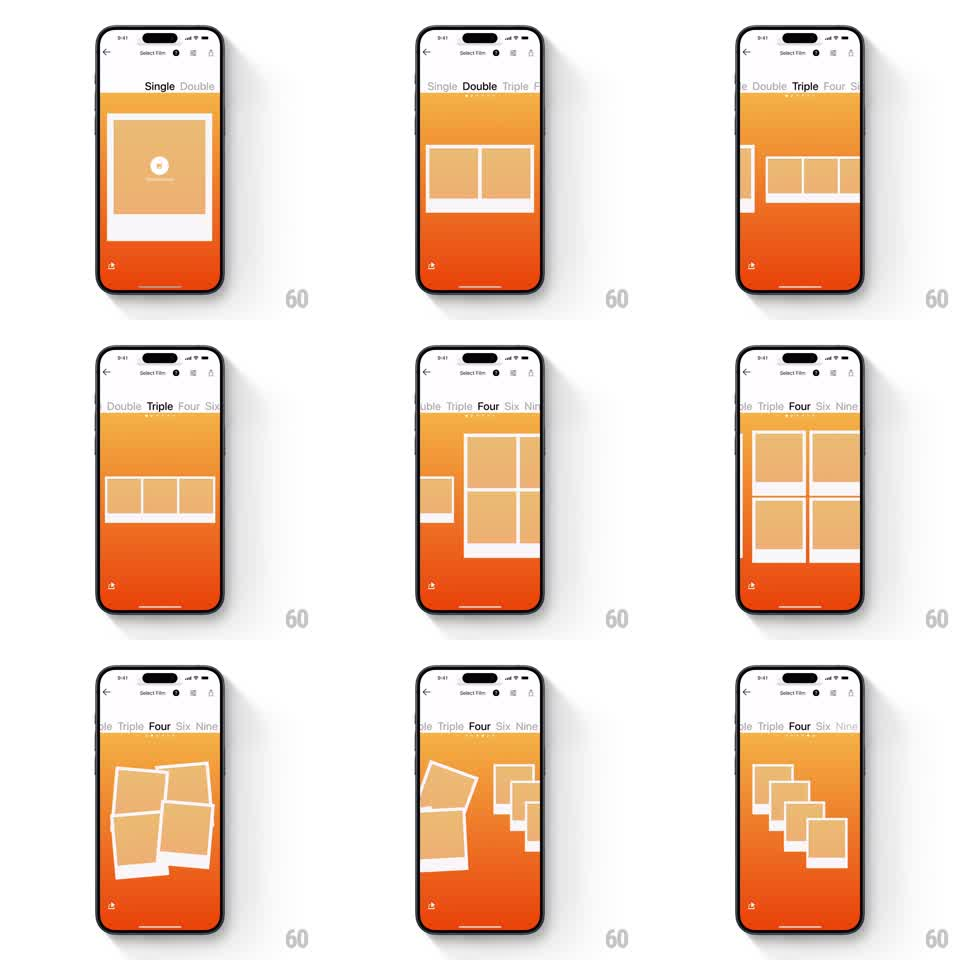

Media
Frame-by-frame

Rebuild this interaction 1:1: Polaroid's Select Film navigation - a swipeable text tab strip (Single, Double, Triple, Four, Six, Nine) driving springy collage-layout transitions where Polaroid frames fly between arrangements with playful rotation.

Rebuild this interaction 1:1: Polaroid's Select Film navigation - a swipeable text tab strip (Single, Double, Triple, Four, Six, Nine) driving springy collage-layout transitions where Polaroid frames fly between arrangements with playful rotation. ## Integration Integration: stack-agnostic spec - springs given as stiffness/damping, timed motions as duration + curve; map every value to your framework and animation library of choice. ## Scene Orange "Select Film" screen (back chevron top-left, film icons top-right). Under it a scrolling text tab strip: Single, Double, Triple, Four, Six, Nine - the active word bold dark, neighbors fading gray. Below: white Polaroid frames (thick white borders, photo area inside) arranged per layout - one big centered frame with a + button for Single, side-by-side pair for Double, a row of three for Triple, a 2x2 grid for Four, and denser grids for Six and Nine. ## Motion spec Pattern: swipe-synced tab strip with springy collage re-layouts. - The tab strip scrolls with the finger (momentum + snap to center a word, spring ~300/22); the active word emboldens and darkens as it crosses center (crossfade 150ms). - Swiping the collage area also switches layouts: frames scatter slightly (each rotates to a random +-8deg and lifts, 200ms) then fly to their new layout positions (spring ~280/18, staggered 30ms), settling with a soft rotation wobble back to 0deg. - Frames entering the layout (going from Four to Six) scale in from 0.6 with the same spring; leaving frames scale out and fade (200ms). - Layout and tab stay in sync both ways: swiping the collage moves the tab strip, scrolling the tabs re-lays the collage. - The + button on Single pulses gently (scale 1 -> 1.06, 1.8s). ## Calibration - Frames keep their white border thickness at every size - borders scale with the frame. - Scatter-then-settle is the personality: mid-transition, the collage should look briefly tousled, never robotic. ## Reduced motion Crossfade between layouts (250ms); tabs still scroll with snap. ## Don't miss - Both gestures work (strip scroll and collage swipe) and stay in sync. - The orange background is flat and constant - all motion belongs to frames and text.